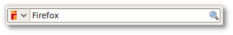
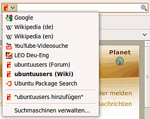
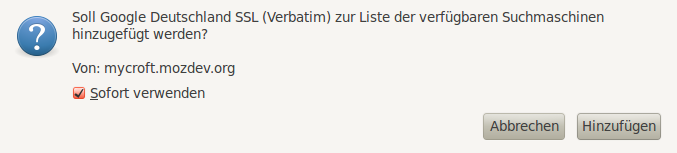
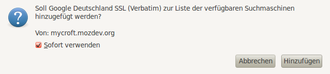
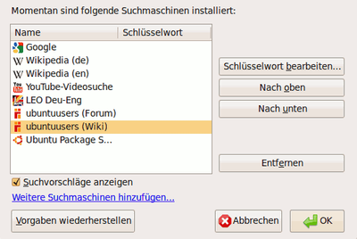

Suchfeld
Achtung!
Da von Firefox alle sechs Wochen eine neue Version erscheint, kann dieser Artikel leider nicht – wie sonst in diesem Wiki üblich – mit einer bestimmten Ubuntu-Version getestet werden. Die Mozilla-Entwickler behalten sich vor, jederzeit neue Funktionen hinzuzufügen oder vorhandene wieder aus dem Programm zu entfernen. Unter solchen Umständen ist es nicht möglich, die Korrektheit der in diesem Artikel beschriebenen Informationen dauerhaft für eine Ubuntu-Version zu garantieren.
Dieser Artikel bezieht sich auf das Suchfeld im Firefox, welches sich rechts oben befindet. Es wird erklärt, wie Suchmaschinen hinzugefügt, entfernt und konfiguriert werden können.

Suchmaschinen hinzufügen¶

Das Hinzufügen von Suchmaschinen ist bei den meisten Webseiten sehr einfach möglich. Man besucht lediglich die Webseite des Suchanbieters, klickt auf den Pfeil rechts neben dem Suchmaschinensymbol und wählt "Beispielsuchmaschine hinzufügen". Anschließend befindet sich die Suchmaschine im Auswahl-Menü.
Diese Herangehensweise ist zwar meist möglich (wie zum Beispiel bei Ubuntuusers.de, Wikipedia  und YouTube ), aber nicht immer. Die betreffende Webseite muss entsprechende .xml-Dateien bereit stellen. Da einige Webseiten – wie beispielsweise Google.de – dies nicht tun, müssen solche Suchanbieter über einen anderen Weg hinzugefügt werden.
und YouTube ), aber nicht immer. Die betreffende Webseite muss entsprechende .xml-Dateien bereit stellen. Da einige Webseiten – wie beispielsweise Google.de – dies nicht tun, müssen solche Suchanbieter über einen anderen Weg hinzugefügt werden.
Dazu klickt man im Auswahl-Menü für die Suchmaschine auf das Feld "Suchmaschinen verwalten..." und dann auf "Weitere Suchmaschinen hinzufügen...". Nun gelangt man auf eine Add-On Seite von Mozilla, auf der Suchmaschinen als Erweiterungen angeboten werden. Ein Klick auf "Herunterladen" und "Hinzufügen" neben dem gewünschten Suchanbieter fügt die Suchmaschine hinzu.
Weitere Suchmaschinen lassen sich beim Mycroft Project  finden. Nachdem man eine Suchmaschine gefunden hat, lässt sich diese direkt herunterladen. Ein Dialog fragt noch einmal nach und bietet die Möglichkeit, die Auswahl sofort zu benutzen.

finden. Nachdem man eine Suchmaschine gefunden hat, lässt sich diese direkt herunterladen. Ein Dialog fragt noch einmal nach und bietet die Möglichkeit, die Auswahl sofort zu benutzen.

Hinweis:
Aufgrund des Fehlers 1069793 ist es derzeit unter Ubuntu nötig, vor dem Hinzufügen von Suchmaschinen von der Homepage des Mycroft-Projects die Firefox-Erweiterung "Unity Desktop Integration" kurzfristig zu deaktivieren. Mittlerweile wurde der Fehler in 14.04.1 und 15.04.1 behoben, in früheren Versionen wohl nicht.
Sollte eine bestimmte Suchmaschine auf den oben genannten Seiten nicht gefunden werden, bietet die Erweiterung Add to Search Bar die Möglichkeit, sich für jede beliebige Seite einen Eintrag generieren zu lassen.
Firefox 34 oder neuer¶
Mit dieser Version wurde das Suchfeld überarbeitet. Um das alte Verhalten wiederherzustellen, gibt man
about:config
in die Adresszeile ein, bestätigt die Sicherheitsabfrage und setzt den Wert
browser.search.showOneOffButtons
auf false.
Firefox 43 oder neuer¶
Mit dieser Version wurde die oben beschriebene Möglichkeit über browser.search.showOneOffButtons entfernt. Man kann das alte Suchfeld jedoch z.B. über das Addon Classic Theme Restorer wiederherstellen, indem man in dessen Einstellungen unter Oberfläche (1) einen Haken bei Alte Suche setzt.
Suchmaschinen verwalten¶

Sortieren¶
In das Menü "Suchmaschinen verwalten..." gelangt man, indem man im Dropdown-Menü des Suchfelds auf "Suchmaschinen verwalten..." klickt. In dem nun offenen Fenster wählt man eine Suchmaschine aus und schiebt sie mit Hilfe der Knöpfe "Nach oben" und "Nach unten" an die gewünschte Stelle.
Suchmaschinen löschen¶
Um eine Suchmaschine zu löschen, wählt man die entsprechende Suchmaschine aus und klickt auf "Entfernen".
Schlüsselwörter¶
Im gleichen Menü können über "Schlüsselwort bearbeiten..." Kürzel für Suchmaschinen hinzugefügt werden. Dies ermöglicht dem Benutzer eine zielgerichtete Suche über die Adresszeile. Beispiel: Nachdem man die deutsche Sektion der Wikipedia als Suchmaschine hinzugefügt hat, vergibt man als Schlüsselwort z.B. wp.
Die Eingabe der Pseudo-Adresse wp hallo führt nun direkt zur entsprechenden Wikipedia-Seite.
Manuell Schlüsselwörter hinzufügen¶
Auch ohne einen entsprechenden Eintrag im Suchfeld kann man Schlüsselwörter verwenden. Dazu macht man einfach einen  -Klick in ein beliebiges Suchfeld auf einer Webseite und wählt "Ein Schlüsselwort für diese Suche hinzufügen ...". Das Schlüsselwort, das man dann eingibt, lässt sich nachher genau so verwenden, wie oben beschrieben.
-Klick in ein beliebiges Suchfeld auf einer Webseite und wählt "Ein Schlüsselwort für diese Suche hinzufügen ...". Das Schlüsselwort, das man dann eingibt, lässt sich nachher genau so verwenden, wie oben beschrieben.
 Übersichtsartikel
Übersichtsartikel- Erstellt mit Inyoka
-
 2004 – 2017 ubuntuusers.de • Einige Rechte vorbehalten
2004 – 2017 ubuntuusers.de • Einige Rechte vorbehalten
Lizenz • Kontakt • Datenschutz • Impressum • Serverstatus -
Serverhousing gespendet von